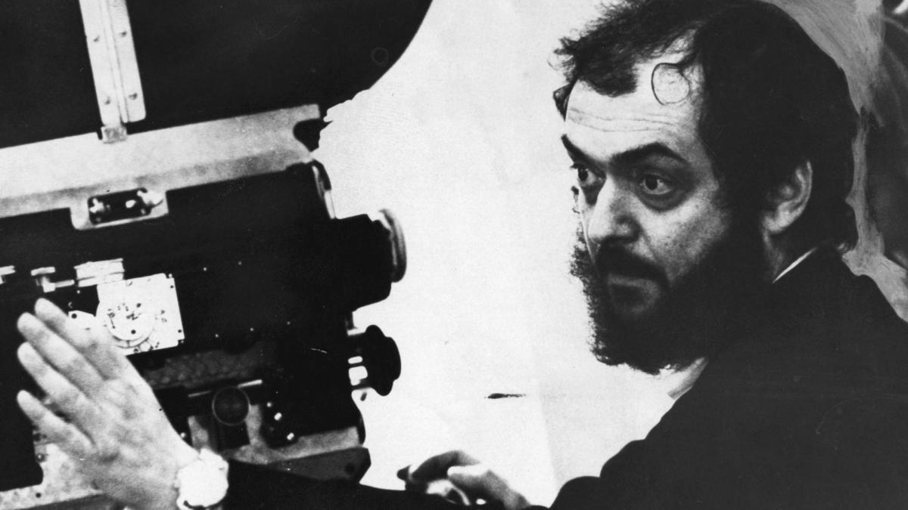

Stanley Kubrick
"If it can be written, or thought, it can be filmed."

Stanley Kubrick filming 'The Shining'.
Timeline of Kubrick's life
- July 26, 1929 - Stanley Kubrick is born in Manhatten, New York.
- July 26, 1941 - Stanley recieves his first camera for his thirteenth birthday.
- March 6, 1945 - Kubrick begins doing photography jobs with magazine look.
- March 14, 1948 - Kubrick marries Toba Metz. They later seperated in 1951.
- March 5, 1951 - Kubrick's first film, Day of the Fight, is released. The film is a documentary about Irish boxer, Walter Cartier.
- October 5, 1951 - Kubrick's second directing credit, Flying Padre, is a short documentary depicting two days in the life of priest Father Fred Stadmuller. The film is nine minutes long.
- March 31, 1953 - Kubrick's first feature length film, Fear and Desire, is a story of four soldiers who confront their fears and desires. Kubrick greatly disliked the film and attempStoryted to buy all the prints of it so no one could see it.
- March 14, 1955 - Stanley Kubrick married Ruth Sobotka. They were married for two years before seperating in 1957.
- September 18, 1957 - Paths of Glory
- October 6, 1960 - Spartacus
- June 12, 1962 - Lolita
- January 29, 1964 - Dr. Strangelove
- April 2, 1968 - 2001: A Space Odyssey
- December 19, 1971 - Clockwork Orange
- January 1, 1975 - Barry Lyndon
- May 23, 1980 - The Shining
- June 17, 1987 - Full Metal Jacket
- March 7, 1999 - Stanley Kubrick died in Harpenden, Hertfordshire, England from what is presumed to be natual causes.
- January 1, 1975 - Eyes Wide Shut is a story of love, sexual fantasies, fidelity, and a powerful secret society
"It’s almost like Picasso in that he mastered so many different genres."
--Gary Ross
More info